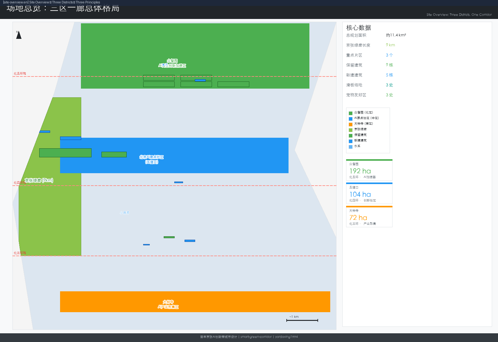
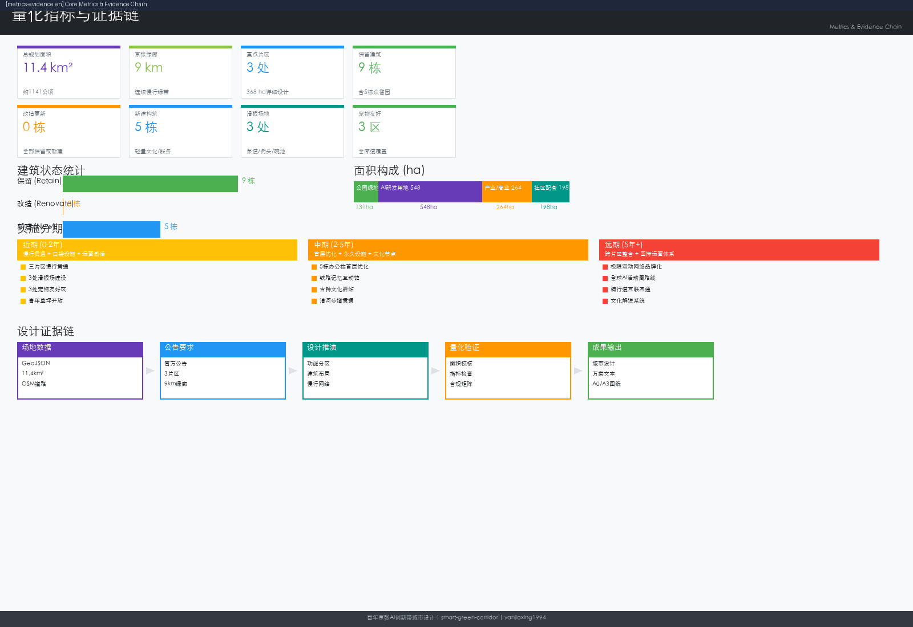
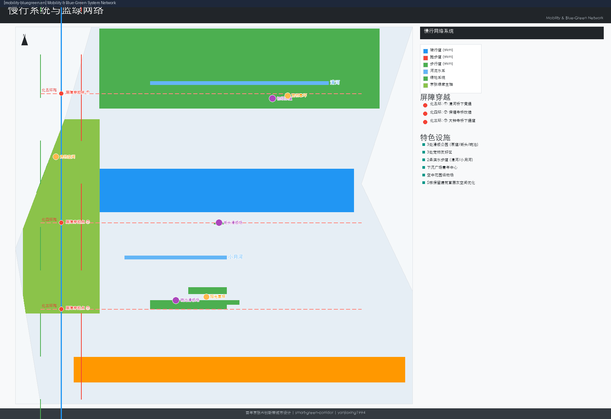
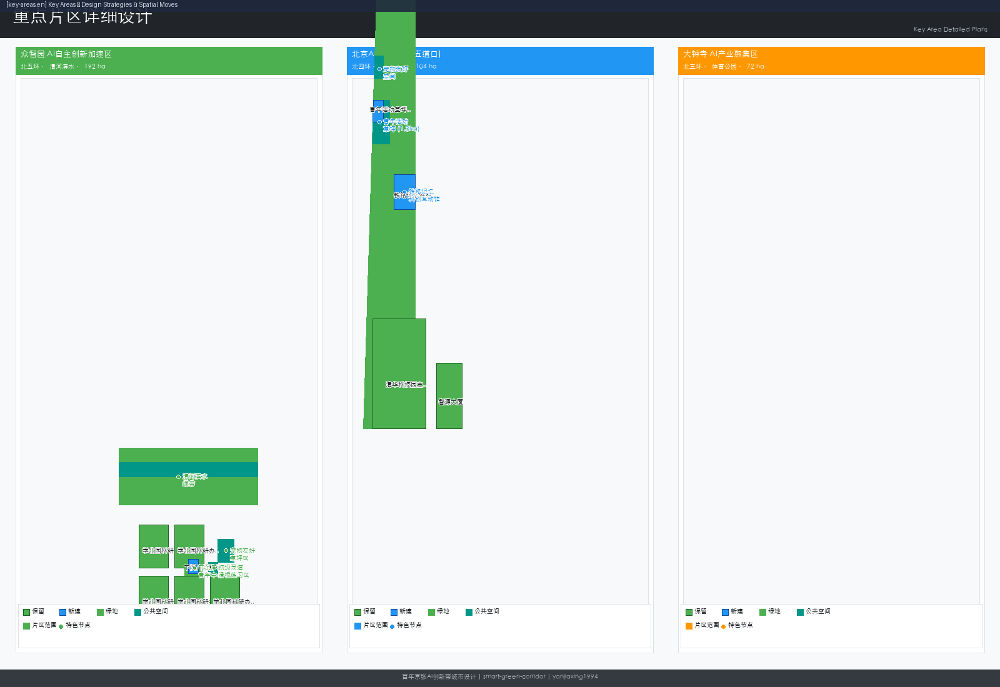

Centennial Jing-Zhang AI Innovation Belt — Micro-Renewal · Strong Connections · Youth-Friendly Urban Design
A comprehensive urban renewal design proposal centered on 'micro-renewal, strong connections' maximizing retention across three core districts along the 9km Jing-Zhang Railway Heritage Park green corridor, with full brand system, 7 global case studies, 10 scene cards, 3 industry test scenarios, 9 inclusive personas, and annual event operations.
Centennial Jing-Zhang AI Innovation Belt — Micro-Renewal · Strong Connections · Youth-Friendly
Design Basis
This proposal takes the official Prequalification Announcement as its primary basis 来源 and the provisional boundary, enumerations, ranges, and sources in brief/site-package/ as machine-readable basis 来源 深度. Complete source mapping in sources.json and standard_matrix.json.
Three-Level Scope Framework
The proposal organizes work across three announced levels: Coordinated Research Scope (43.6 km²), Overall Design Scope (11.4 km²), and Key Area Detailed Design Scope (368.4 ha) 深度. Spatial evidence: 空间数据.
Strategic Industry and Urban Form Research
Core task: building a world-class AI innovation ecosystem through the spatial framework of "university sourcing → open-source collaboration → enterprise transformation → public experience → international dissemination" 来源 标准.
---
1. Design Framework — Micro-Renewal · Strong Connections
Core Principles
| Principle | Content | Spatial Implementation |
|---|---|---|
| Maximum Retention & Reuse | Retain all quality buildings, parks, heritage, vegetation | 15 buildings + 5 parks retained |
| Youth-Friendly | AI professionals, students, entrepreneurs: sports, social, commute, leisure | 3 skate parks, 11 new public spaces |
| Blue-Green Continuity | 9km Jing-Zhang Heritage Park green corridor ecological connection | "Three Paths, One Green" cycling+running+walking |
Retain-Renovate-New
| Category | Count | Detail |
|---|---|---|
| Retain | 15 buildings + 5 parks | 5 Xuebei Park R&D + Tsinghua Science Park + Zhiyuan Tower + Dongsheng Tower + Dazhongsi Sports Park |
| Renovate | 8 | Ground floor gray-space (5), facade opening, commercial activation, track night-glow |
| New | 11 lightweight | Railway Memory Pavilion, Open Source Forum, Bell Culture Station, Youth Lawn Kiosk, Sunken Plaza Youth Center, Bowl Kiosk — all single-story 3-7m |

Overall Design Scope: Urban Renewal at Planning Depth
Regulatory detailed planning depth per 标准, decomposed into reviewable objects: land use 空间数据, buildings 空间数据, depth constraints 深度 and 深度.
Key Area Detailed Design
Three mandatory detailed design areas 深度: Zhongzhi Park (192.1 ha), Wudaokou (104.3 ha), Dazhongsi (72.0 ha). Evidence: 空间数据 through PROV-KEY-003.
---
2. North: Zhongzhi Park — Garden-Style Full-Stack Autonomous Innovation District
Core Carrier: Zhongguancun Dongsheng Science Park · Xuebei Park — 238,300 m² GFA, 5 R&D buildings, Green Building 3-Star, sunken plaza, two sky gardens, 4,000 m² canteen, 18,500 m² commercial. Qinghe River (north), Xiaoyue River (east).
Building Strategy: All 5 buildings retained. Ground-floor micro-renovation: 2.5-3m deep canopies, folding floor-to-ceiling windows opening toward plaza, glass curtain walls at B/C building facades facing sunken plaza.
| Building | Floors | Status | Optimization |
|---|---|---|---|
| BLDG-ZZY-01 (A) | 12F/48m | retain | Café outdoor + co-working lobby |
| BLDG-ZZY-02 (B) | 10F/40m | retain | Sky garden bridge |
| BLDG-ZZY-03 (C) | 10F/40m | retain | Plaza visual permeability |
| BLDG-ZZY-04 (D) | 8F/32m | retain | Tree-shaded courtyard |
| BLDG-ZZY-05 (E) | 8F/32m | retain | Riverside open interface |
Key Interventions: Sunken Plaza Youth Center (~200 m² steel+membrane, café+co-working+outdoor cinema), Sky Garden rooftop sports (half-court basketball+badminton+yoga, 4m PC safety fencing), Qinghe Riverside Walk+Cycle Path (~800m, 3 viewing platforms), Beginner Pump Track (800 m²), Pet-Friendly Lawn (600 m², fenced).
---
3. Central: Wudaokou — Campus-Adjacent Tech Transfer & Talent Community
Core Carriers: Tsinghua Science Park, Zhiyuan Tower, Dongsheng Tower. 1.4 km² district. 1.3km Jing-Zhang Heritage Park segment. Planned 1.3ha new green space. Heqing Garden and "Three Paths, One Green" corridor.
| Building | Floors | Status | Optimization |
|---|---|---|---|
| BLDG-WDK-01 (Tsinghua SP) | 18F/72m | retain | Open facade + display windows |
| BLDG-WDK-02 (Zhiyuan) | 15F/60m | retain | Open-source community entrance |
| BLDG-WDK-03 (Dongsheng) | 12F/48m | retain | Commercial activation + tech transfer |
Key Interventions: "Three Paths, One Green" main axis (running 2m/cycling 3m/walking 2.5m + railway heritage display belt), 1.3ha Youth Activity Lawn (camping, market, yoga, concert bowl ~300 capacity + Service Station ~100 m²), Street Skate Plaza (1,200 m², street-style), Pet Space (500 m², 2 fountains, 2 bag stations), Railway Memory Innovation Pavilion (~300 m², lightweight steel+glass above tracks, LED matrix facade), Open Source Community Forum (150 m², transparent glass box, reservable, community-operated).
---
4. South: Dazhongsi — Urban Smart Economy & International Exchange District
Core Assets: Dazhongsi Sports Park (30,694 m²: 500m track, basketball 576 m², 5v5 football 1,536 m², 4 table tennis, badminton Oct 2026), Shunxin Garden (300m linear, preserved native trees + cast-iron bell), Jing-Zhang Heritage Park Phase II (70 communities, ~450,000 residents, children's climbing area), railway bridge over 3rd Ring Road (retained).
Key Interventions: Bowl Skate Park (1,500 m², 1.2-2.0m depth concrete bowl, spectator terraces, LED lighting), 500m Track night-glow coating + 2 self-powered fitness checkpoints + movable container bleachers, Cycling Loop (~1.2km, 3rd Ring Road underpass), Ancient Bell Culture Station (~150 m², Corten steel, interactive bell), Pet Sun Lawn (500 m², fenced+open), Bowl Skate Kiosk (~40 m²).
---
5. Cross-District Systems
5.1 Slow-Traffic
| System | Length | Width | Material |
|---|---|---|---|
| Cycling Path | 9km | 3m | Colored asphalt (Jing-Zhang Blue) |
| Running Path | 9km | 2m | Synthetic track (warm gray) |
| Walking Path | 9km | 2.5m | Permeable brick/gravel |
Barrier crossings: 5th Ring (underpass), 4th Ring (Baofusi Bridge improvement), 3rd Ring (under-bridge cycling).
5.2 Youth Sports Network
| District | Type | Area | Level |
|---|---|---|---|
| Zhongzhi Park | Pump Track | 800 m² | Beginner-Intermediate |
| Wudaokou | Street Plaza | 1,200 m² | Intermediate |
| Dazhongsi | Bowl | 1,500 m² | Advanced |
~15-min cycling between venues.
5.3 Pet-Friendly System
Three district zones (1,600 m²) + 5 Green Corridor supply points (~every 2km).
5.4 Cultural Heritage
Zhongzhi Park: Qinghe ecology + data-visualization water features. Wudaokou: University culture + railway memory + LED matrix + transparent forum. Dazhongsi: Ancient bell + railway industry + Corten steel + sleeper benches + locomotive climbing.
5.5 AI Scene Cards (10)
See Chinese proposal for the complete 10-scene card table (01-AI Lunch Run, 02-Hackathon, 03-Rooftop League, 04-Cinema Night, 05-AR Exploration, 06-Pet Market, 07-Skate League, 08-Night Run, 09-Sound Art, 10-Global AI Open Day). Each card includes: spatial location, AI technology support, data source, privacy boundary, human review mechanism, operating entity, frequency.
---
6. Brand System
- Overall: Jing-Zhang AI Nexus
- Belt: Jing-Zhang Smart Symbiotic Belt
- Three Cores: Zhongzhi Park · Qinghe North Bank Innovation Harbour / Origin Community · Wudaokou Knowledge Valley / Dazhongsi · 3rd Ring Smart Gateway
- Nodes: Skate Parks, Pet Oases, Open Source Courtyards, Railway Memory Gallery, Bell Resonance, Glow Track
Logo: Abstract "京" character — railway tracks merging into AI circuit traces, iron-gray → AI blue gradient.
Colors: Primary Jing-Zhang Blue #2B5F8A | Secondary Qinghe Green #4A8C6F | Accent Innovation Orange #E87830 | Neutral Rail Gray #5A5A5A
Typography: Source Han Sans (Chinese headings, SIL OFL), Inter (English), system sans-serif (body).
---
7. Global Case Studies
| # | Case | Insight for Jing-Zhang |
|---|---|---|
| 1 | King's Cross, London (67 acres) | Railway heritage reuse + industry-community symbiosis |
| 2 | Kendall Square, Cambridge MA | 15-min walking innovation circle + talent housing mix |
| 3 | one-north, Singapore (200 ha) | R&D-commercial-residential-green mixed programming |
| 4 | DMC, Seoul (0.57 km²) | Brownfield regeneration + ultra-dense innovation nodes |
| 5 | 22@Barcelona (200 ha) | Industrial plot micro-renewal + innovation-residential mix |
| 6 | Nanshan S&T Park, Shenzhen (11.5 km²) | S&T corridor + river ecological stitching |
| 7 | West Bund, Shanghai (11.4km) | Riverside industrial belt AI-art dual activation |
Conclusion: Jing-Zhang's "9km railway heritage corridor + 3 top universities + Zhongguancun ecosystem" triad is globally unique — a linear AI ecosystem distinct from point renewal, campus concentration, or new town models.
---
8. Industry Test Scenarios
A: Autonomous Model Safety Evaluation Sandbox (Zhongzhi Park, ~300 m²): Controlled-environment model safety evaluation, red-team testing, standards compliance. Target: ≥5 models/quarter, CNAS-recognized.
B: Edge AI Computing Station Stress Test (5 points along Green Corridor, ~20 m² each): Real-world edge AI chip performance verification (latency, energy, environmental adaptability). Target: <100ms response, >99.5% availability.
C: Urban Intelligence Traffic Optimization Experiment (Wudaokou-Dazhongsi segment, 10 checkpoints + 5 sensors): Aggregated sensor data for crowd management and facility maintenance optimization. Target: <2hr fault response, 24hr advance holiday plans.
---
9. Inclusive Personas (9 Personas)
Open-source developers, startup teams, enterprise visitors, local residents, university students/faculty, elderly (morning exercise, barrier-free, large-text signage, rest pavilions every 200m), children (climbing, nature education, soft surfaces, non-toxic materials), persons with disabilities (tactile paving, voice navigation, wheelchair ramps ≤5%, elevators, hearing loops), low-income entrepreneurs (zero-cost entry, tiered pricing, community skill exchange).
---
10. Regional Collaboration
| Direction | Partner | Division | Mechanism |
|---|---|---|---|
| North Wing | Future Science City | Basic research → tech transfer | Quarterly matchmaking, shared lab platform |
| South Wing | Huairou + E-Town | Algorithms → apps → manufacturing | Annual summit, cross-district computing scheduling |
| Jing-Jin-Ji | Xiong'an + Tianjin + Langfang | Beijing sourcing → regional application | Coordinated planning, cross-border data pilot |
Xiaoyue River Experience Path: ~5km "AI Evolution Road" from Zhongzhi Park southward through Wudaokou to Dazhongsi — North: AI milestone pillars (1956 Dartmouth→2026 contemporary), Central: open-source "knowledge spillover" interactive installations, South: AI-from-lab-to-life application exhibits.
---
11. Landmarks and Component Library
Three Landmarks: Qinghe North Bank Observation Tower (30m spiral steel, data-viz LED ring), Open Source Light (8m LED matrix cube, university/enterprise contributed), Bell Resonance (12m Corten steel bell tower, 1:3 interactive bell, night projection).
Component Library: Mobility (distance markers, cycling stops, benches), Ecological (rain gardens, permeable paving, bioswales), Sports (skate modules, pump track modules, street elements, half-court basketball), Service (pet fountains, fitness checkpoints, bike racks).
---
12. Accessibility Strategy
- 9km Green Corridor: ramps ≤5%, width ≥1.8m, rest platforms every 500m
- Continuous tactile paving + ≥20 voice navigation posts
- Wheelchair viewing areas at all skate parks, elevators/ramps at all landmarks
- Child-friendly: soft surfaces, parent visibility, non-toxic materials, fencing
- Elderly-friendly: low-intensity equipment, rest pavilions every 200m, large-text signage
- Digital inclusion: offline versions, age-friendly large-text interfaces, text+audio dual information
---
13. Copyright Ledger
See report/copyright_statement.md (complete per-asset ledger) and sources.json (13 registered sources).
Status: ✅ Python deps (Pillow/MIT, Shapely/BSD, PyProj/MIT, jsonschema/MIT), OSM data (ODbL), government public info — cleared. ⚠️ Font embedding (replace with SIL OFL before final). All content AI-agent original or public-data derived. No remote scripts, map tiles, web fonts, or external APIs.
---
14. Annual Event System
Unified Brand: "Jing-Zhang AI Greenway"
| Frequency | Event | Venue | Scale |
|---|---|---|---|
| Daily | AI Lunch Run Club | 9km track | 50-200 |
| Weekly (Fri) | Outdoor Cinema Night | Sunken Plaza | 100-300 |
| Biweekly | Open Source Hackathon | Open Source Forum | 50-150 |
| Monthly | Rooftop Sports League + Glow Track Trial | Sky Garden + Dazhongsi | 100-300 each |
| Bimonthly | Pet Social Weekend Market | Three pet zones | 200-500 |
| Quarterly | Skate League + Sound Art Festival + AI Roadshow | Three skate parks + Shunxin Garden + Forum | 100-2,000 |
| Annual | Global AI Open Day + Railway Culture Week + AI Urban Design Forum | Green Corridor full route | 5,000-20,000 |
Governance: Sports (District Sports Bureau), Culture (Culture & Tourism Bureau + curators), Open Source (community committee: university+enterprise+resident), Pet (third-party professional), International (Foreign Affairs + Science & IT Bureau).
---
15. Metrics and Phasing
Core Metrics
| Metric | Value | Confidence |
|---|---|---|
| Design Area | 11.4 km² | high |
| Retained Buildings | 15 | high |
| New Structures | 6 lightweight | medium |
| Green Corridor Trail | 9km | high |
| Cycling Total | 11.6km | medium |
| Skate Parks | 3,500 m² | medium |
| Pet Zones | 2,100 m² | medium |
Phasing
- Phase 1 (0-2yr): Trail continuity, 3 skate parks, pet zones, youth lawn, sunken plaza center (7 projects)
- Phase 2 (2-5yr): Ground floor optimization, Railway Pavilion, Bell Station, Open Source Forum (7 projects)
- Phase 3 (5yr+): Sports league, AI Open Day route, pet system completion, heritage system (5 projects)
- TOTAL: 19 projects
---
Risk Declaration
Official site boundary and key area polygons are provisional. All spatial metrics require recalculation upon official redline release. Missing: road redlines, utility plans, building ownership data, heritage protection boundaries, flood control standards. This proposal does not claim official approval, ratified planning, final land ownership, or guaranteed implementation.



---
References
- Official Announcement 来源
- Agent Task Book 来源
- Provisional Boundaries 来源
- agent_fact_pack.md, project_scope_summary.csv, missing_data_checklist.csv
- Global cases: public planning documents, academic literature, official district websites
- Site info: developer materials, government park announcements, planning public notices, news reports
- Machine index:
sources.json,metrics.json,compliance_matrix.json,standard_matrix.json,design_depth_matrix.json
<!-- revision: 2026-08-10-v4-comprehensive-en -->
<!--3dfd37d0--> <!--c05b42da--> <!--34b57e9d-->